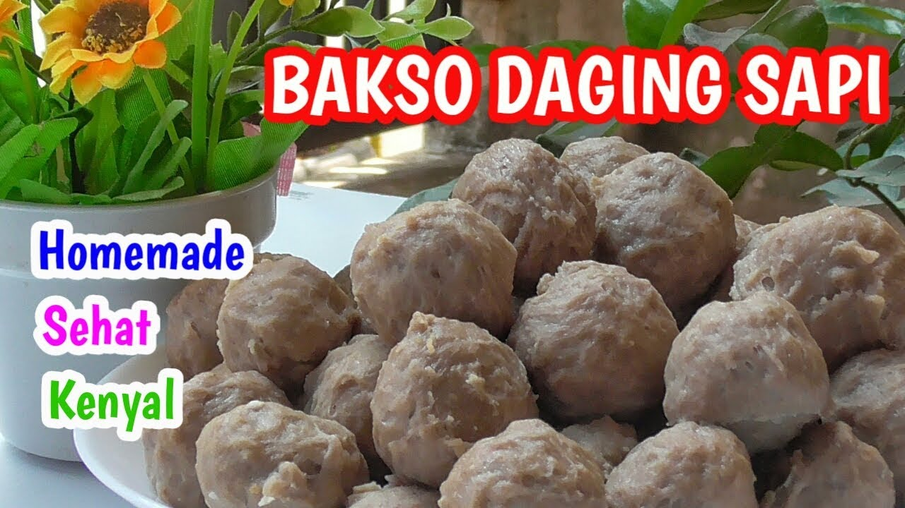

Hoby ngebakso.. cari bakso Asli daging sapi buat stok dirumah harga nya mahal. Homemade aja deh dijamin ga pake pengawet..
Bahan-bahan
- 1/2 Kg daging sapi yg bagus nya ya
- 100 gram daging iga biar ada urat²nya
- 5 Buah bawang putih goreng
- 5 Buah bawang merah goreng
- 60 gram Tepung tapioka
- 2 1/2 sdt Garam
- 2 sdt Gula pasir
- 1 sdt Lada bubuk
- 1 Bungkus Roycko sapi
- 1 sdt Penyedap rasa
- 1 butir Putih telur
- 2 sdt Baking soda
- ± lebih 150 gram Es batu
Cara Memasak Bakso
- Siapkan semua bahan yang dibutuhkan untuk membuat bakso daging sapi.
- Cuci bersih daging sapi dan potong kecil-kecil agar mudah di haluskan.
- Masukkan daging sapi ke dalam blender atau food processor lalu haluskan sampai daging benar-benar halus.
- Tambahkan es batu, telur, bawang merah goreng, dan bawang putih. blender lagi adonan sampai bahan lembut merata.
- Tuang adonan daging ke dalam wadah besar lalu bumbui dengan garam, gula pasir, lada bubuk dan Roycko.
- Lalu tambahkan baking powder dan tepung kanji ke dalam adonan. aduk secara merata adonan bakso daging sapi sampai semua bahan tercampur.
- Setelah adonan bakso sapi jadi, rebus banyak air dalam panci sampai mendidih.
- Setelah air mendidih, bentuk adonan bakso bulat-bulat dan masukkan ke dalam air mendidih tadi.
- Rebus bakso sapi sampai matang dan mengapung di permukaan.
- Setelah matang mengapung, angkat dan tiriskan.
- Bakso sapi siap disajikan langsung ataupun dibuat menjadi olahan lain.